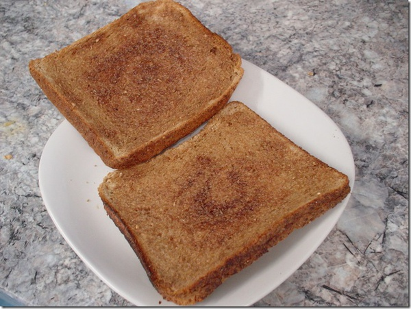

Apple Oat Bread
Ingredients:
| Apple juice |
3/4 cup |
| Bread flour |
2 cups |
| Sugar |
2 tsp |
| Salt |
1/4 tsp |
| Butter |
1 Tbsp |
| Oats |
1/4 cups |
| Cinnamon |
1/3 tsp |
| Dry yeast |
1 tsp |
| Dried Apple |
1/4 cups |
Methods:
- Adding all the ingredients into your breadmaker in the order given.
- Then select the "Basic Bread" button.
- When the breadmaker finished it work you are ready to serve.